 is officially:
Total Needles: 0
Crossing Needles: 0
Elapsed Time: 0 s
Needles are half as long as the line distance.
Formula: total / crossing
More information
Needles are half as long as the line distance.
Formula: total / crossing